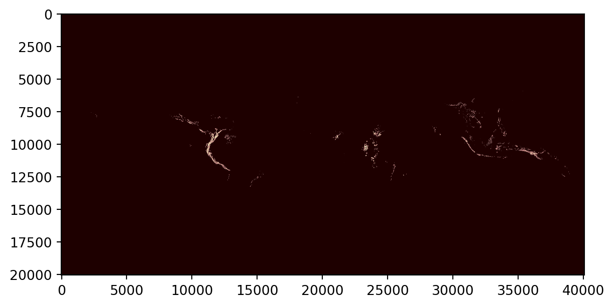
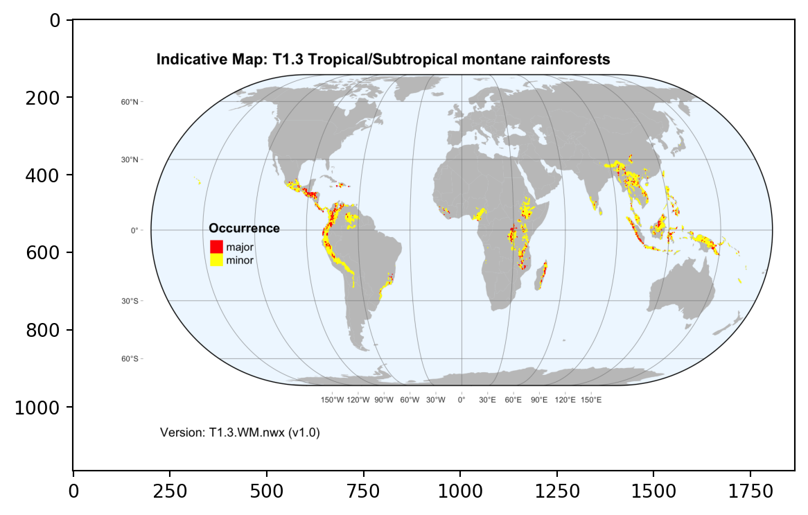

import pandas as pd
import os
import rasterio
from matplotlib import pyplot as plt
from PIL import Image
import numpy as np
import tarfile
import pyprojroot
import requests
import xml.etree.ElementTree as ETDownload data with Python
Set up required libraries
Set up work and output directories
We use library pyprojroot to define relative paths from our repository root folder:
repodir = pyprojroot.find_root(pyprojroot.has_dir(".git"))Profile information from OSF
Workbook with profile content for Ecosystem Functional Groups of the IUCN Global Ecosystem Typology (Level 3 units) available at https://osf.io/4dcea
We can read this workbook directly from the url using pandas:
profiles_url='https://osf.io/download/4dcea/'
EFG_profiles = pd.read_excel(profiles_url, sheet_name = 'Short description')Here is a peak of the downloaded file:
EFG_profiles[['name','short description', 'url']].head()| name | short description | url | |
|---|---|---|---|
| 0 | F1.5 Seasonal lowland rivers | These medium to large rivers in tropical, subt... | https://global-ecosystems.org/explore/groups/F1.5 |
| 1 | F1.4 Seasonal upland streams | Seasonal rainfall patterns in large parts of t... | https://global-ecosystems.org/explore/groups/F1.4 |
| 2 | F1.3 Freeze-thaw rivers and streams | In cold climates at high latitudes or altitude... | https://global-ecosystems.org/explore/groups/F1.3 |
| 3 | F1.2 Permanent lowland rivers | Lowland rivers with slow continuous flows up t... | https://global-ecosystems.org/explore/groups/F1.2 |
| 4 | F1.1 Permanent upland streams | These small rivers or streams in mountainous o... | https://global-ecosystems.org/explore/groups/F1.1 |
Indicative map data download from zenodo
Indicative maps are available from different Zenodo repositories.
Bundle of indicative maps
One repository holds the bundle of maps in compressed tar archives. This record id automatically resolves to the latest version:
record_url = 'https://zenodo.org/api/records/3546513'
r = requests.get(record_url)Check the difference between the id and conceptid, and the two DOI (digital object identifier):
response = r.json()
print((response['id'],
response['conceptrecid'],
response['doi'],
response['conceptdoi']))(10081251, '3546513', '10.5281/zenodo.10081251', '10.5281/zenodo.3546513')We will create a folder for this direct download from zenodo for the latest version of the bundle:
datadir = repodir / "gisdata" / "indicative-maps-bundle" / "latest"
datadir.mkdir(parents=True, exist_ok=True)The zenodo record has four different files:
response['files'][{'id': 'fe0bbd7a-bc60-415f-a8f6-6848acd8c220',
'key': 'README.md',
'size': 19383,
'checksum': 'md5:e6cdcb4b46b261fecd5fce5c31fb5805',
'links': {'self': 'https://zenodo.org/api/records/10081251/files/README.md/content'}},
{'id': '437d31b3-6502-454a-9511-da1432b22d1f',
'key': 'all-maps-vector-geojson.tar.bz2',
'size': 853479699,
'checksum': 'md5:8490adfd971bc3a5b02cc72832e2df3e',
'links': {'self': 'https://zenodo.org/api/records/10081251/files/all-maps-vector-geojson.tar.bz2/content'}},
{'id': 'd2cb3226-e68c-452d-a6f8-a65d0686380b',
'key': 'all-maps-raster-geotiff.tar.bz2',
'size': 157378816,
'checksum': 'md5:245d09d535609d1c010eff52e9c8bfaa',
'links': {'self': 'https://zenodo.org/api/records/10081251/files/all-maps-raster-geotiff.tar.bz2/content'}},
{'id': 'a42361fc-e4bc-48d3-8c8a-0deafa722f80',
'key': 'map-details.xml',
'size': 114612,
'checksum': 'md5:5177a7a6fc5aa4981088093a68b2964e',
'links': {'self': 'https://zenodo.org/api/records/10081251/files/map-details.xml/content'}}]We want to download three of them:
for i in range(len(response['files'])):
zenodo_url = response['files'][i]['links']['self']
outputfile = datadir / response['files'][i]['key']
if not outputfile.exists():
zdownload = requests.get(zenodo_url)
if zdownload.ok:
with open(outputfile, mode="wb") as file:
file.write(zdownload.content)We extract maps from the tar archives in a sandbox folder:
sandbox = repodir / "sandbox" / "latest"
sandbox.mkdir(parents=True, exist_ok=True)maps_tar = datadir / 'all-maps-raster-geotiff.tar.bz2'
with tarfile.open(maps_tar) as my_tarfile:
if hasattr(tarfile, 'data_filter'):
my_tarfile.extractall(path=sandbox,filter='data')
else:
# remove this when no longer needed, see https://docs.python.org/3/library/tarfile.html#tarfile-extraction-filter
print('Extracting may be unsafe; consider updating Python')
my_tarfile.extractall(path=sandbox)Extracting may be unsafe; consider updating PythonRepositories for single EFG maps
Map details are stored in a xml file that is part of the map bundle zenodo download.
Check the file was downloaded:
map_details_file = datadir / "map-details.xml"
map_details_file.exists()TrueWe’ll use the xml2 library to read the xml file
tree = ET.parse(map_details_file)
#maplist_root = tree.getroot()We can query map details for an specific map:
node=tree.find(".//Map[@efg_code='T1.1']")
for child in node.iter():
print(ET.tostring(child))b'<Map efg_code="T1.1" map_code="T1.1.web.mix" map_version="v2.0" update="2020-11-08">\n <Functional_group>T1.1 Tropical/Subtropical lowland rainforests</Functional_group>\n <Description>Major and minor occurrences were initially identified using consensus land-cover maps (Tuanmu et al. 2014) and then cropped to selected terrestrial ecoregions (Dinerstein et al. 2017; DAWE 2012) at 30 arc seconds spatial resolution. Ecoregions were selected if: i) their descriptions mentioned features consistent with those identified in the profile of the Ecosystem Functional Group; and ii) if their location was consistent with the ecological drivers described in the profile.</Description>\n <Contributors>\n <map-contributor>JR Ferrer-Paris</map-contributor>\n <map-contributor>DA Keith</map-contributor>\n </Contributors>\n <Dataset-doi>10.5281/zenodo.5090450</Dataset-doi>\n </Map>\n '
b'<Functional_group>T1.1 Tropical/Subtropical lowland rainforests</Functional_group>\n '
b'<Description>Major and minor occurrences were initially identified using consensus land-cover maps (Tuanmu et al. 2014) and then cropped to selected terrestrial ecoregions (Dinerstein et al. 2017; DAWE 2012) at 30 arc seconds spatial resolution. Ecoregions were selected if: i) their descriptions mentioned features consistent with those identified in the profile of the Ecosystem Functional Group; and ii) if their location was consistent with the ecological drivers described in the profile.</Description>\n '
b'<Contributors>\n <map-contributor>JR Ferrer-Paris</map-contributor>\n <map-contributor>DA Keith</map-contributor>\n </Contributors>\n '
b'<map-contributor>JR Ferrer-Paris</map-contributor>\n '
b'<map-contributor>DA Keith</map-contributor>\n '
b'<Dataset-doi>10.5281/zenodo.5090450</Dataset-doi>\n 'The field with doi for the individual map are stored in the Dataset-doi tag. We can run a query for all elements containing this tag and summarise this using list comprehension:
all_dois = [doi.text for doi in tree.findall( ".//Dataset-doi")]Now we use this list of DOIs to download a copy of each of the repositories containing files for each ecosystem functional group:
for doi in all_dois:
out_folder = repodir / "gisdata" / "indicative-maps" / doi
out_folder.mkdir(parents=True, exist_ok=True)
if len(os.listdir(out_folder)) ==0:
# query doi to get the corresponding zenodo API url
r = requests.get('https://doi.org/'+doi, allow_redirects=True)
parsed_uri = urlparse(r.url)
zenodo_url = '{uri.scheme}://{uri.netloc}/api{uri.path}'.format(uri=parsed_uri)
r.close()
# now query the API
r = requests.get(zenodo_url)
response = r.json()
for i in range(len(response['files'])):
zenodo_url = response['files'][i]['links']['self']
outputfile = out_folder / response['files'][i]['key']
if not outputfile.exists():
zdownload = requests.get(zenodo_url)
if zdownload.ok:
with open(outputfile, mode="wb") as file:
file.write(zdownload.content)Compare downloaded files
Now we have two copies of each map file, one in the sandbox folder (extracted from the map bundle), and one downloaded directly from the corresponding record.
Map code and version are described in the map attributes in the xml file:
node=tree.find(".//Map[@efg_code='T1.3']")
node.attrib{'efg_code': 'T1.3',
'map_code': 'T1.3.WM.nwx',
'map_version': 'v1.0',
'update': '2021-11-26'}The file extracted from the tar archive uses the same code and version combination for the file name:
for k in sandbox.glob("%s*.tif" % node.attrib['efg_code']):
print(k.name)T1.3.WM.nwx_v1.0.tifAs well as the file downloaded from the specific repository:
out_folder = repodir / "gisdata" / "indicative-maps" / node.find('Dataset-doi').text
for k in out_folder.glob("%s*.tif" % node.attrib['efg_code']):
print(k.name)T1.3.WM.nwx_v1.0.tifRaster maps
We’ll use the rasterio to read and plot the raster file
src = rasterio.open(k)
plt.imshow(src.read(1), cmap='pink')
plt.show()
Compare this with the thumbnail downloaded from Zenodo:
pngfile = [x for x in out_folder.glob("*.png")]
img = np.asarray(Image.open(pngfile[0]))
plt.imshow(img)